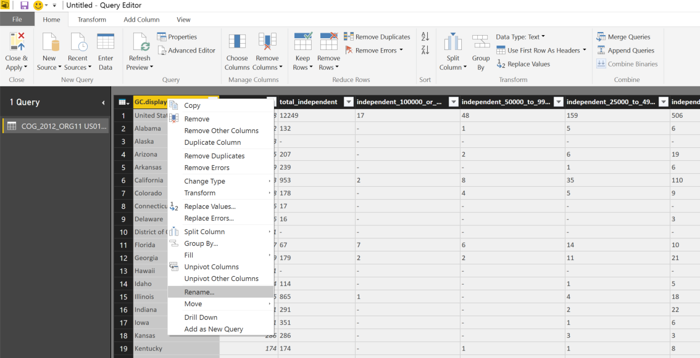
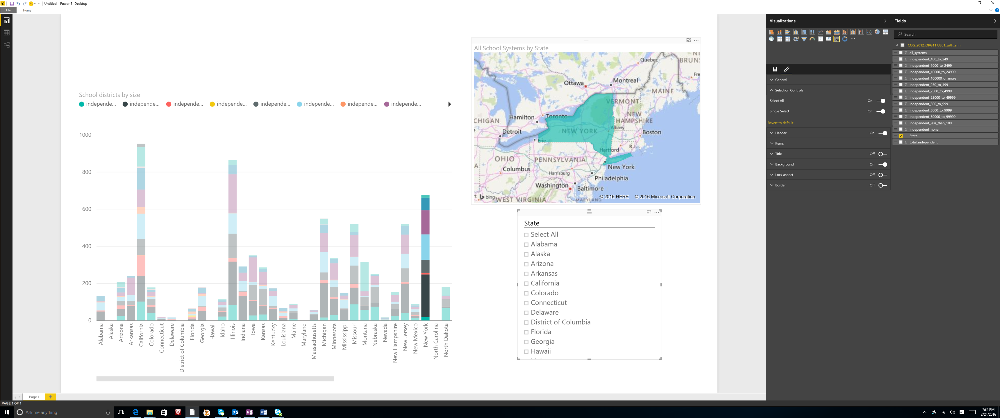
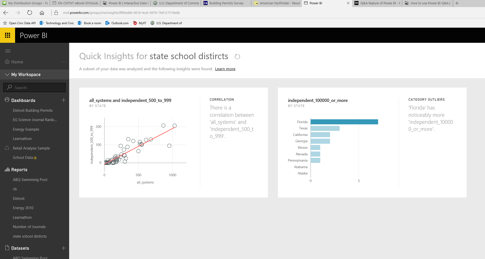

What data?
Data analysis using open government data has taken the center stage for everything from community organizing to starting or growing a business to crafting good public policy. Many government entities – federal, state, and local – have made open data a cornerstone of their transparency initiatives. But opening data to the public is just the first step to driving knowledge and insights in using that data. People need easy to use tools to help them discover, combine, analyze, and visualize that data. This two part tutorial will cover how to use the tool Power BI with open data from both federal and local data sources.
In Part 1 of this tutorial series, you will learn how to pull data into Power BI. We will then do some transforming of the data to make it in the exact format we want in order to use it. We will create some simple visuals with that data. And then we will ask questions in, natural language, to gain some insights.
The next tutorial will focus on creating queries, doing advanced calculations, creating and sharing reports, and building dashboards so that every user can get a personalized view of the data that matters most. You will also see how easy it is to keep on top of your data no matter where you are. With touch-enabled native apps for Windows, iOS, and Android, you will be able to access your data wherever you go.
Getting the tool:
Go to http://powerbi.com and click on the Get Started For Free button. This will enable you to both download the desktop version of Power BI, as well as sign up with an account that you can use to share and access your data from anywhere.

Follow the instructions to install Power BI and run it. The first thing you will see is this welcome screen:

There are 4 very short, but very informative videos to help you get started. I encourage you to take the time to review them to understand how you can use this incredibly simple, but also very powerful tool.
Getting started by getting data:
We are going to start by looking at a very simple data set to create a very simple report. We are going to visualize the number of school districts in each state using US Department of Commerce Census data. In the process, we will see what it takes to load that data, transform the way it looks, and use it to create some visualizations. Then we will move on to something more complex in Part 2.
You can find a lot of good data quickly using the American Fact Finder site, which gives you a friendly way to search for the data you need. We are interested in schools, so we can look at this data set that lists, by state, the number of school districts, and the size of enrollment in those districts. We won’t be concerned about size for now, just the number of districts. You can see the dataset here.
Let’s download this data so that we can work with it. Click on the Download button and uncheck the “Include descriptive data element names” button. Choose the Excel format (which is actually CSV) and click ok. When it is ready, click on the download button to download the file (or you can simply use the file included in the folder wit this demo.
In Power BI, click on Get Data When you click on Get Data, you will see the vast number of data sources that you can bring into Power BI. You can bring in standard file formats such as Excel, CSV, and Text. You can also bring in data from database formats, such as SQL Server, Oracle, DB2, and MySQL. Many government data sources use the oData format. You have access to cloud-based data sources such as Azure, Hadoop, and Salesforce. And many others.
In this case, we are going to open this dataset up as a CSV, so click on CSV and point it to the file you just downloaded.
Before we load it, let’s transform this so that when it comes in, we have less work to do to change it structurally (we can also do this later after we have the data loaded and have worked on it). Click on Edit.
Cleaning the data:
We are only going to focus on the number of school districts in the state, and the distribution of schools by size. So we can get rid of many of these columns. To get rid of a column, select the column and choose “Remove column” from, the ribbon. Do this for the first column (Geo.id). You can also remove multiple columns simultaneously. For example select the GEO.display-label column, hold the Shift button and select the GC.display-label column. Now multiple columns are selected. Click on Remove Columns from the ribbon.
Now your first column will show the states. GC.display-label1 is not a very descriptive name for the column heading. Right click on the column heading and choose “Rename…” and give it a more meaningful name like “States”.

For this exercise, we are only interested in Independent Schools. That means you can remove all of the columns from “Total Dependent” on to the right till the end. Remove these columns. Also remove the “all_systems” column.
We can do more to transform this data. For example, we can make sure that the data in the numeric columns are seen as numeric. This may sound intuitive, but remember that this is from a CSV file, which is something of a glorified text file. We want to make sure that as we are working with numbers that Power BI (or Excel or any database) realizes they are numbers and not text.
First, we need to select the rather large number of columns that extends from total_independent to the end. Again, we can do this quickly by selecting the total_independent column, scrolling to the right and selecting the last column. These columns all contain whole numbers. In the ribbon (in the Transform section) click on “Data Type” and change the data type from Text to Whole Numbers.
Data Types, Data Types:

Note the wide variety of data types you have to choose from
There are a few other things that we can do before we load this data to make it easier to work with. For example, note that the number zero is represented by the “-“ character. For charting, we want this to be a real digit. In the ribbon (in the Transform section), click on replace. Replace “-“ with “0” (do not put the quotes in.
We have one more clean up task to take care of. Note that the top row is the entire US. It is an aggregated row. We want to do that ourselves with our visualization. So in the ribbon (in the Reduce Row section), click on the small arrow next to the Remove Rows button and choose remove top rows. Remove only the first row.
Visualizations:
We are now ready to create some interesting visualizations. Click on Close & Apply on the ribbon (in the close section on the left). Now you will see three sections on your window. The big empty space is your pallet. To the right is the visualizations pane where you can choose and modify your visuals. To the right of that is your fields pane, where you can choose which fields you would like to visualize. Click the expand arrow on the table in the fields pane.

For our first visual, we will create a filled map, with the shading on the map representing the total number of independent school districts in the state. In the visuals pane, click on the filled map icon. This will give you a blank template on your pallet.
You will first need to tell Power BI which field represents the geography data (i.e. States). Drag the States field from the Fields pane to your visual. Expand the visual so that the United States is in view, and you will see that it is shaded.
You now need to tell Power BI which field represents the data you want to map. Drag the total_independent field to the map, and you will see the states with more school districts now appear darker than those with less. In the visualization pane, click on the format icon (the little paint brush) and expand Title to reveal title options. Give this visual a meaningful name such as “Independent Schools by State”.
Next, we want to add another visual. You may need to expand the pallet by clicking on the edge of the white space and sliding it to the right. Add a stacked column chart by clicking on it in the visualizations pane (top row, second from the left). Again, you are presented with a template. Start by dragging the state field to the template. Then select all of the breakdowns for size of the school districts and drag those to the page (i.e. all of the fields that start with “independent_...”. Note that Power BI automatically predicts that you want to see all of the states and their school districts, broken down in the column by the sizes of those districts. You did not have to do any formulas or connections.

Again, give this a title by clicking on the pencil icon in the visualization pane. Expand the “Title” section and replace the name that is there with something meaningful like “School District Sizes”.
Now that is a lot of data to cram into one column chart. You can simplify charts by adding slicers. Slicers allow you to choose just the data you want to focus on. Click on a white space on your pallet and then choose the slicer icon in the visualization pane.
You now need to decide what your users will slice the data by. The obvious choice in this example is state. It will allow your users to focus on one or a few states. Click on State in the field pane.
It is important to note that Power BI automatically figures out how to tie all of your visualizations in your report together. For example, if you click on Arizona in the slicer, you will see the data on both the map and the column chart highlight Arizona data.
Let’s add a “Select All” button to our slicer. In the visualization pane, click on the format icon and open the “Selection Controls” group. Turn the “select all” slider to on. Now you have a select all button on your slicer. Click on it and you will see all of the states come back into focus.
But it is not just the slicer that is tied to the rest of your visuals. On your column chart, scroll over to New York and click on its column. You will see the data for New York come into focus on the map.

Save your Power BI reports by clicking on File/Save. After you save, you are prompted to get some insights that Power BI has discovered for you. Click on Get Insights and you will be taken to your personal Power BI report page on the browser.

Next steps:
How did it do this? Power BI quickly searches different subsets of your dataset while applying a set of sophisticated algorithms to discover potentially-interesting insights. Power BI scans as much of a dataset as possible in an allotted amount of time. In this case, with the visual on the right, it is telling you that Florida has noticeably more independent schools with 100,000 or more students. If you click on the visual, you can see a more focused view.
Now you are in the browser version of Power BI. From here, it is easy to create dashboards from your visuals, to publish reports to the web, and to ask questions in your own natural language. We will cover these in Part 2.